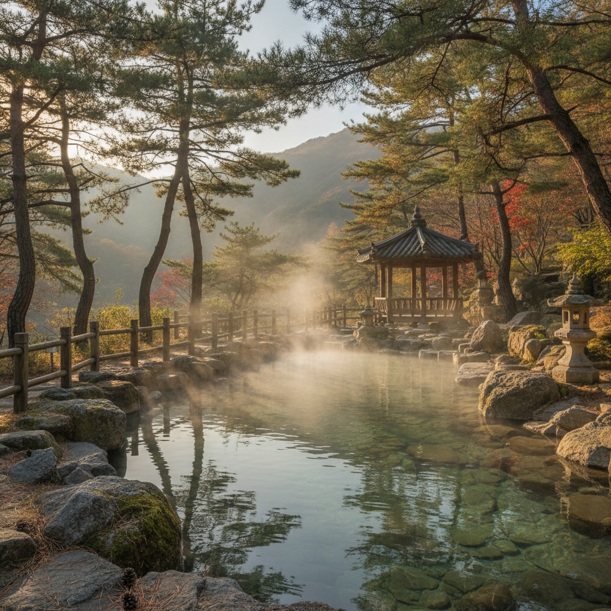
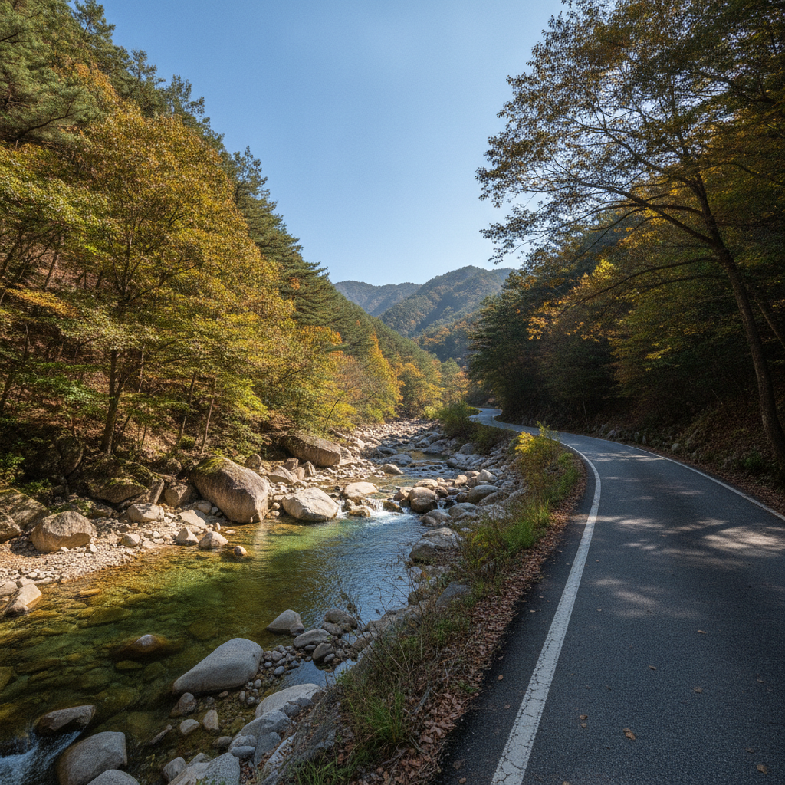
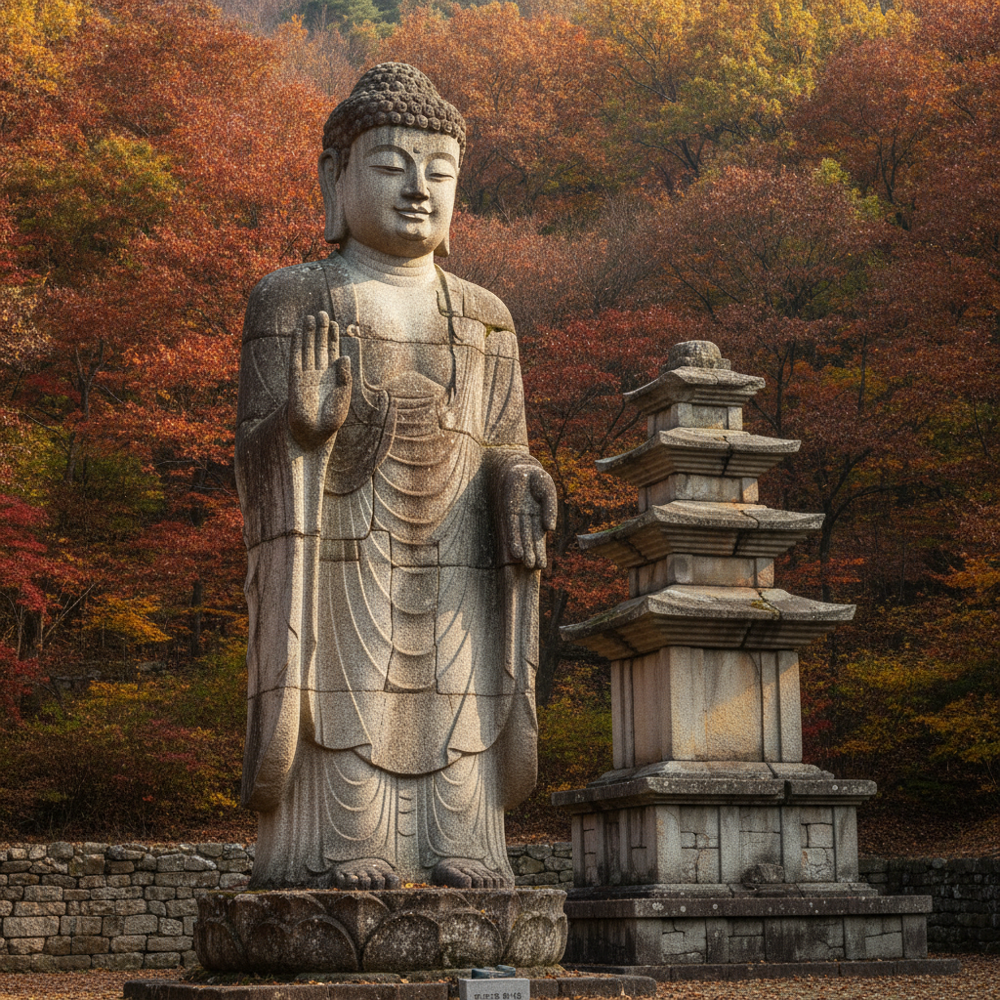

충북 수안보온천 가을 첫 입탕 — 환절기 노천탕 요금 비교와 월악산 드라이브 코스
아침저녁으로 선선한 바람이 부는 환절기에는 따뜻한 노천탕에서 피로를 푸는 온천 여행이 제격입니다. 충북 충주시 수안보온천은 지하 250m 암반층에서 솟아나는 53℃ 천연 알칼리 온천수를 전 업소에 충주시가 직영 공급하는 국내 유일의 중앙 집중식 온천지구입니다. 본 글에서는 수안보 주요 호텔 노천탕과 대중사우나 요금·시설을 꼼꼼히 비교하고, 월악산 송계계곡을 따라 이어지는 가을 드라이브 코스와 미륵대원지 탐방 일정까지 한눈에 정리해 드립니다.

초가을 아침 햇살 아래 김이 피어오르는 수안보 노천 온천탕 / AI 제작 이미지
01 | 왕의 온천 수안보, 가을 첫 입탕이 각광받는 이유
충북 충주시 수안보면 온천리 일대에 자리 잡은 수안보온천은 조선 태조 이성계가 악성 피부염을 치료하기 위해 즐겨 찾았다는 기록이 남아 있어 예로부터 '왕의 온천'이라 불려 왔습니다.
일교차가 10도 이상 벌어지는 9월 말부터 10월 초순의 환절기는 근육이 경직되고 혈관이 수축하기 쉬워 몸의 면역력이 떨어지기 쉬운 시점입니다. 이때 천연 온천욕을 즐기면 혈액 순환이 촉진되고 신진대사가 활발해져 환절기 피로 회복에 큰 도움이 됩니다.
수안보는 수도권 기준 중부내륙고속도로 괴산IC 또는 연풍IC에서 약 15~20분 거리에 위치하여 접근성이 매우 뛰어납니다. 서울 강남권에서 출발할 경우 평일 기준 약 1시간 40분, 주말에는 2시간 안팎이면 도착할 수 있어 당일치기 힐링 나들이 코스로도 사랑받고 있습니다.
02 | 자연 용출 천연 온천수 53℃의 특징과 수질 관리
수안보온천의 가장 큰 독창성은 바로 대한민국 최초의 지자체 직영 '중앙 집중식 공급 체계'에 있습니다. 민간 업자가 각자 지하수를 난개발하는 방식이 아니라 충주시청 온천관리팀에서 온천공을 직접 통합 관리합니다.
지하 250m 이상의 석회암 암반층에서 자연 용출되는 수온 53℃의 원탕 온천수는 pH 8.3 내외의 약알칼리성을 띱니다. 리튬, 칼슘, 마그네슘, 나트륨, 규산 등 유익한 광물질이 풍부하게 함유되어 있어 피부에 닿았을 때 미끌거리면서도 부드러운 감촉을 느낄 수 있습니다.
모든 숙박업소와 대중탕에 매일 일정한 온도와 수질의 천연 원수를 직접 관로로 급수하므로, 어느 업소를 방문하더라도 수질의 편차 없이 믿을 수 있는 양질의 온천욕을 경험할 수 있다는 점이 신뢰를 줍니다.
03 | 수안보 주요 대중사우나·노천탕 시설별 특징 및 요금 비교
수안보 온천지구 내에는 전통 대중사우나부터 최신 리모델링을 마친 리조트형 노천탕까지 다양한 시설이 운영되고 있습니다. 방문객의 선호도와 예산에 맞추어 선택할 수 있도록 주요 4대 온천 시설의 특징과 공식 이용 요금을 비교 정리하였습니다.
| 시설명 |
노천탕 유무 |
성인 정상 요금 |
투숙객/할인 요금 |
주요 특징 및 시설 |
| 수안보 파크호텔 |
유 (도자기 노천탕) |
14,000원 |
10,000원 (투숙객) |
월악산 전망 노천 맥반석탕, 한국도자기 전시관 연계 |
| 수안보 상록호텔 |
유 (야외 정원탕) |
12,000원 |
8,000원 (공무원/투숙객) |
넓은 실내 바데풀, 히노키 쉼터, 가성비 우수 |
| 수안보 온천랜드 |
무 (실내 대형탕) |
10,000원 |
9,000원 (네이버예약) |
수영장 결합 찜질방, 키즈 물놀이 시설 보유 |
| 수안보 하이 스파 (충주시 공공) |
무 (대중사우나) |
7,000원 |
5,000원 (충주시민) |
충주시 운영 공공 온천탕, 청결하고 저렴한 원탕욕 |
파크호텔은 고지대에 위치하여 월악산 능선을 바라보며 즐기는 야외 노천탕이 전국적인 명소입니다. 상록호텔은 탁 트인 시설과 안정된 서비스로 부모님을 동반한 가족 단위 방문객에게 인기가 높습니다. 순수하게 온천수의 효능만을 체험하고자 한다면 충주시가 직영하는 하이스파가 가장 합리적인 선택입니다.
04 | 프라이빗 가족탕 이용 가이드와 사전 예약 팁
대중탕 이용이 부담스럽거나 어린 자녀 또는 연로하신 부모님과 함께 오붓한 시간을 보내고 싶다면 '가족탕' 대실을 추천합니다. 수안보에는 객실 내에 대형 히노키탕이나 대리석 석조탕을 갖춘 가족탕 전문 모텔 및 호텔이 밀집해 있습니다.
일반적으로 가족탕 대실은 기본 2시간 또는 3시간 기준으로 운영되며, 주중 4만~6만 원선, 주말 및 공휴일에는 6만~9만 원 선에 형성되어 있습니다. 성인 2인 기준 요금이며 1인 추가 시 약 1만 원 안팎의 추가 요금이 부과됩니다.
가을 성수기 주말(토·일요일)에는 당일 현장 방문 시 대기 시간이 1~2시간 이상 발생하거나 조기 마감될 수 있으므로, 최소 3~5일 전 유선 또는 온라인 플랫폼을 통해 오전 타임(10시~13시) 또는 오후 타임(14시~17시)으로 사전 예약하는 것이 안전합니다.

월악산 송계계곡을 따라 이어지는 한적한 초가을 드라이브 도로 / AI 제작 이미지
05 | 가을철 노천탕 이용 시 권장 입욕 루틴과 건강 수칙
찬 바람이 부는 야외 노천탕에서는 체온 변화가 급격히 일어날 수 있으므로 안전한 입욕 순서를 지키는 것이 매우 중요합니다. 탕에 바로 뛰어들기보다는 미온수로 가벼운 샤워를 마친 뒤 발끝부터 서서히 온도를 적응시켜야 합니다.
권장 입욕 순서는 실내 온탕(38~40℃)에서 5~10분간 체온을 올린 뒤, 야외 노천탕으로 이동하여 반신욕으로 10~15분간 머무는 방식입니다. 상체는 서늘한 공기를 쐬고 하체는 따뜻한 물에 담그는 두한족열(頭寒足熱) 상태를 유지하면 혈관 부담을 줄이면서 깊은 이완 효과를 얻을 수 있습니다.
1회 입욕 시간은 20분을 넘기지 않는 것이 좋으며, 중간중간 탕 밖으로 나와 미온수를 마시며 수분을 충분히 보충해야 탈수와 어지럼증을 예방할 수 있습니다. 특히 고혈압이나 심혈관 질환이 있으신 분은 냉온탕 급격한 교차 입욕을 피해야 합니다.
06 | 월악산 송계계곡 따라 달리는 가을 단풍 드라이브 코스
온천욕으로 몸을 가볍게 풀었다면 수안보에서 차로 10분 거리에 있는 국립공원 월악산 송계계곡 방면으로 가을 드라이브를 떠나보시길 권합니다. 수안보에서 미륵대원지를 거쳐 송계계곡으로 이어지는 지방도 597호선은 충북 최고의 드라이브 명선 중 하나입니다.
도로 양옆으로 월악산의 웅장한 기암괴석과 맑은 계곡물이 나란히 이어지며, 9월 하순부터 물들기 시작하는 활엽수림의 은은한 단풍빛이 차창 밖으로 펼쳐집니다. 길 중간에 위치한 수문동폭포, 와룡대, 팔랑소 등 송계 8경의 주요 명소에는 차량 5~10대 규모의 간이 주차 공간이 마련되어 있어 잠시 차를 멈추고 계곡 물소리를 감상하기 좋습니다.
송계계곡 도로의 길이는 약 12km로, 시속 40~50km로 천천히 서행하며 감상하면 편도 약 25분이면 완주할 수 있습니다. 굽이진 와인딩 구간이 많으므로 무리한 과속을 피하고 가을 경치를 여유롭게 만끽해 보세요.
07 | 천년의 신비 중원 미륵대원지와 석조여래입상 산책
송계계곡 초입 충주시 수안보면 미륵리에 위치한 '중원 미륵대원지(사적 제317호)'는 고려 초기에 창건된 유서 깊은 석굴 사찰 터입니다. 일반적인 사찰들이 남향을 바라보는 것과 달리, 이곳의 미륵불은 북쪽의 월악산 영봉을 정면으로 바라보고 서 있는 특이한 북향 사찰 구조를 띠고 있습니다.
마의태자가 신라의 멸망을 슬퍼하며 금강산으로 향하던 중 이곳에 머물며 석불을 세웠다는 전설이 전해져 내려옵니다. 대형 화강암을 깎아 만든 높이 10.6m의 석조여래입상은 장엄하면서도 온화한 미소를 띠고 있어 바라보는 이에게 깊은 평온을 선사합니다.
미륵대원지 입구 주차장은 무료로 개방되어 있으며, 사찰 터를 둘러보고 하늘재 옛길 입구까지 가볍게 산책하는 코스는 약 40분에서 1시간 정도 소요됩니다. 울창한 소나무 숲길과 완만한 흙길이 이어져 있어 노약자도 편안하게 걸을 수 있는 무장애 힐링 코스입니다.

고려 초기 석조 유적과 미륵대원지 석조여래입상의 고즈넉한 풍경 / AI 제작 이미지
08 | 수안보 향토 먹거리 꿩요리와 산채정식 추천 메뉴
수안보 온천마을은 전국에서 손꼽히는 꿩 요리 특화 거리로 유명합니다. 과거 조선 시대부터 온천욕을 즐긴 뒤 기력을 보충하기 위해 즐겨 먹었던 전통 보양식으로 자리 잡았습니다.
대표 메뉴인 '꿩 코스 요리'는 꿩 가슴살 샤브샤브, 꿩 만두, 꿩 육회, 꿩 불고기, 꿩 탕수육, 얼큰한 메밀칼국수 전골 등 7~8가지 요리가 순차적으로 제공됩니다. 꿩고기는 기름기가 적고 단백질이 풍부하여 담백하고 부드러운 육질이 일품이며, 2인 기준 6만~8만 원 안팎으로 맛볼 수 있습니다.
육류가 부담스러운 분들에게는 월악산 일대에서 채취한 자연산 취나물, 두릅, 더덕 등을 정갈하게 차려내는 '산채정식(1인 1만 5천 원~2만 원 안팎)'이나 속을 편안하게 풀어주는 '능이버섯전골'을 추천해 드립니다.
09 | 수도권 및 충청권 출발 당일치기·1박2일 추천 일정표
수안보온천과 월악산 권역을 알차게 둘러볼 수 있는 추천 여행 일정을 동선 효율에 맞추어 정리하였습니다.
🚗 당일치기 힐링 입탕 코스
· 08:30 수도권 출발 (중부내륙고속도로 이용)
· 10:30 중원 미륵대원지 도착 및 석불·하늘재 숲길 산책 (약 1시간 소요)
· 12:00 송계계곡 드라이브 후 점심 식사 (산채정식 또는 꿩 샤브샤브)
· 13:30 수안보 온천마을 이동 후 노천탕 입욕 (수안보 파크호텔 또는 상록호텔 2시간)
· 16:00 족욕체험장 산책 및 로컬 특산물(충주 사과, 온천 찐빵) 구매
· 17:00 귀가 출발
🏡 1박 2일 여유 충전 힐링 코스
· 1일차: 수안보 도착 → 가족탕 체크인 및 1차 온천욕 → 꿩 코스 요리 석식 → 온천천 야간 조명 산책로 족욕
· 2일차: 호텔 조식 → 월악산 송계계곡 드라이브 → 충주호 악어봉 전망대 탐방 → 충주 활옥동굴 관람 → 귀가
10 | 수안보 온천 여행 방문 전 필수 확인 체크리스트
출발 전 아래 사항들을 미리 점검하시면 더욱 쾌적하고 실속 있는 여행을 완성할 수 있습니다.
📋 수안보 가을 온천 여행 체크리스트
1. 수영복·수영모 지참 여부: 파크호텔 및 일반 노천탕은 수영복 착용 없이 이용 가능한 남녀 분리형 노천 사우나이나, 물놀이형 바데풀이나 수영장은 수영복 및 모자가 필수입니다.
2. 가족탕 사전 유선 예약: 주말 방문 시 대실 현장 마감이 잦으므로 최소 3일 전 객실 형태와 이용 시간을 확정하세요.
3. 지역 화폐 활용: 충주사랑상품권(카드형)을 충전하여 사용할 경우 현지 식당 및 온천 시설에서 결제 혜택을 누릴 수 있습니다.
4. 환절기 보온 겉옷: 노천탕 입욕 직후 바깥바람을 맞으면 체온이 급격히 내려가므로 방풍 기능이 있는 도톰한 겉옷을 반드시 준비하세요.
#수안보온천
#수안보노천탕
#충북온천여행
#월악산드라이브
#송계계곡
#미륵대원지
#가을온천추천
#수안보파크호텔
#수안보가족탕
#환절기힐링여행